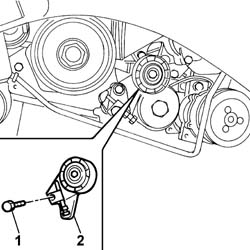

1092D20 AIR CONDITIONER COMPRESSOR BELT MOBILE TENSIONER - R R
- Path
- Procedures > 10 ENGINE UNIT > 1092 VARIOUS ENGINE COMPONENT CONTROLS > 1092D AIR CONDITIONER COMPRESSOR DRIVE > 1092D20 AIR CONDITIONER COMPRESSOR BELT MOBILE TENSIONER - R R
- Kind
- repair procedure (removal / refitting; the operation number is the code)
- Applies to
- engines: 2.8 JTD 8V; all production periods
- Interactive page
- https://sloeber94.github.io/elrnDB-fDct/en/#/244000991
Applies to: engines: 2.8 JTD 8V; all production periods
 Removing
Removing
 Refitting
Refitting- Disconnect the negative battery terminal.
Op. 1092D10 AIR CONDITIONER COMPRESSOR DRIVE BELT - R + R
1. Undo the bolt retaining the moving tensioner.
2. Remove the moving tensioner.

Applies to: engines: 2.8 JTD 8V; all production periods
Refitting
Removing- Fit the moving tensioner.
- Tighten the bolt fixing the moving tensioner checking the torque.
Op. 1092D10 AIR CONDITIONER COMPRESSOR DRIVE BELT - R + R
- Connect the negative battery terminal.